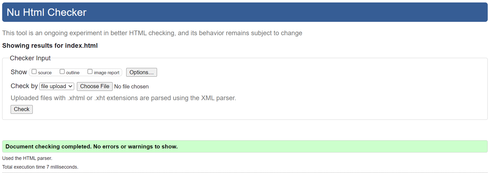

Saving Private Ryan
HOME
Captain John Miller (Tom Hanks) takes his men behind enemy lines to find Private James Francis Ryan, whose three brothers have been killed in combat. Surrounded by the brutal realities of war, while searching for Ryan, each man embars upon a personal journey and discovers their own strength and triumph over an uncertain future with honor, decency and courage.

Company Credits: Paramount Network
Release Date: July 21, 1998
Generes: War/Drama
Rating: R
Running time: 2h 49min
